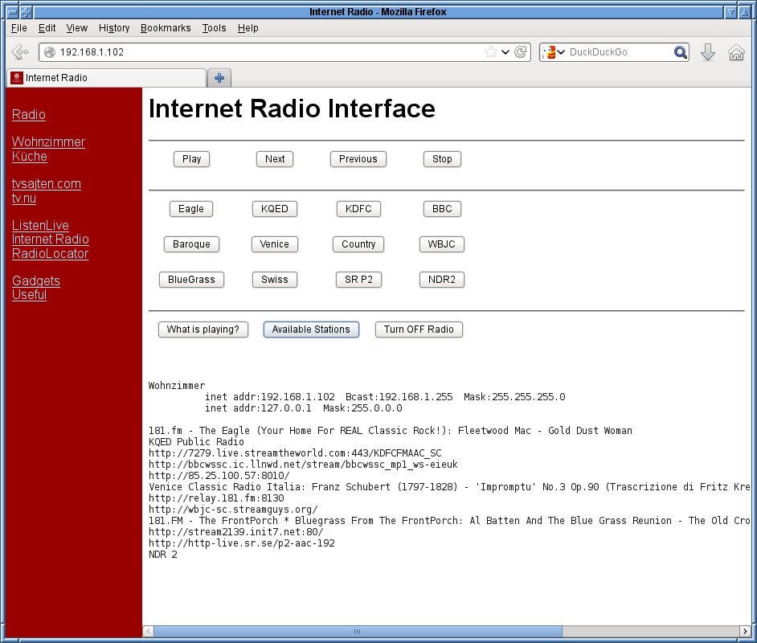
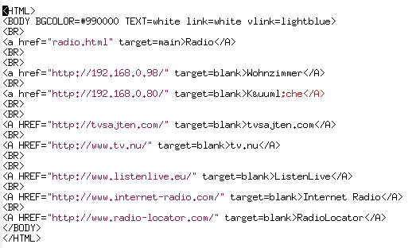
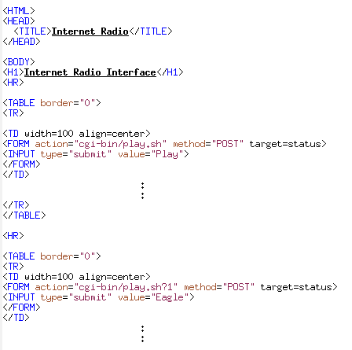

Of course, today we have the Raspberry Pi available, which has all the necessary hardware on board, namely an Ethernet port, either wired or wireless, and an analog sound output. Having decided on the hardware a little research on the web about other people's solutions to the same problem resulted in the following strategy for the software.
For the software approach I use the standard current Debian Wheezy distribution and assume that you have your raspi connected to the Internet, either by cable or WLAN. Wired ethernet normally works out of the box if you have a DHCP server on your network, most routers do that by default. If you use WLAN probaly the easiest way is to start the X-window interface by executing startx on the command line and run the WIFI setup that you can find on the desktop. Once your hooked up to your network you need to find out the IP number of the raspi. Just run
ifconfig
which will display the settings for each network adapter. Find a line that starts
with inet addr: and the four numbers following that look like 192.168.1.102
is the IP number of the raspi. You will need that later when controlling the radio
from your cell phone. Your actual IP number will likely be different from the one shown
above. If you are connected by wire and WLAN, you will have two interfaces eth0 and
wlan0. The IP number of either network interface will work for the internet radio.
OK, now we proceed by installing the required packages by opening a terminal window and typing
sudo apt-get update
sudo apt-get install mpd mpc apache2
Having the required software installed it is time to test the basic functionality.
The mpd program is a daemon, that runs in the background and is started
automatically at boot time. We interact with the daemon by the mpc program.
For good measure I suggest to reboot the system, even though that's not strictly
necessary. When the system is turned off it is a good time to connect the raspi to
some active loudspeakers with built in amplifier. Or, if you dare, connect it to
some input of your stereo amplifier. For this you might need a cable that has a
3.5 mm connector that is attached to the raspi and RCA connectors that are attached
to the amplifier.
In order to play the radio stations we need to inform the raspi about the channels. For this I prepared a small text file that contains the Internet addresses of the radio stations I want to listen to, one station per line with URL and port number, separated by a colon. A simple sample file looks like this
http://108.61.73.118:8030
http://109.123.116.202:8022
and call that file pls.txt. The actual name does not matter, just pick any
one you prefer. We can now tell mpd about our playlist by typing
cat pls.txt | mpc add
and check that it swallowed it by
mpc playlist
which should return contents of the file, the list of stations by their URL. Now it is
time to start making noise, which is done by the command
mpc play 1
to play the
first station in the playlist and mpc play 2 to play the second. If your list is
longer by having more lines with channels in the pls.txt file, I am sure you'll
figure out how to address them. Normally the play command connects to the radio station rather
quickly in less than a second or two and should result in some music. The two channels above
have been stable for a long time and are a classic rock station, playing Led Zeppelin and
Queen, and the second station playing classical classical music, like Beethoven and Mozart.
The command
mpc stop
stops playing the music and
mpc current
tells you, what is currently playing. These are just the basic functions, for more just
check the manual page for mpc.
As a matter of fact you can find a long list of Internet radio stations at the following URLs
http://www.listenlive.eu
http://www.internet-radio.com
http://www.radio-locator.com
Check it out and add your favorites to the playlist file pls.txt.
At this point you can take a shortcut and install for example the app mpdroid on your smart-phone and remotely control the mpd daemon on your raspi. You'd get some functionality, but miss out on the fun of learning a bit of HTML and CGI-BIN controls of your raspi.
At this point the basic audio functionality is established and we need to add the control interface, which is provided by the apache2 server. I assume that you know the IP number of your raspi, that you have determined before. On any computer, on your local net, including the raspi itself, fire up a browser and add the IP of your raspi to the address line. You should receive a message that says
It works!
This is the default web ....
which means that your apache2 web server is running, which it should do automatically
after installing it, which is what you should have done, if you followed the instructions.
The web server basically dishes out web pages which are located on the raspi. The page
you were just shown is actually a file named index.html that resides in the
directory /var/www/ by default. You can change that location by fiddling with
the apache2 configuration files, but I assume you use, as I do, the default configuration
that came with the installation.
What we have to do is to replace the index.html file with another one that provides
the Internet radio interface. Here is a screen-shot of what I ended up with

On the left hand side there is a red area with several useful links like the different Internet radios scattered in my household, links to the Swedish TV program, links to sites with Internet radio stations, and some more useful things. On the right hand side in the upper half of the screen there is the radio interface with buttons for playing and stopping and below that there are twelve buttons for the radio stations in the playlist file pls.txt, mine has twelve entries, obviously. The three buttons in the bottom row are kind of self-explanatory. Finally, below the buttons is a status area, where the information from the button presses is displayed. In the above example I pressed the "Available Stations" button and the twelve links are displayed. Above that the hostname of the raspi "Wohnzimmer" and its IP number is displayed. I found that useful for debugging.
Having described the interface, we now turn to the implementation. To set up the main window divided up into three parts, the left red sidebar, the button interface and the status display, I use html framesets. The index.html file that replaces the default one in /var/www looks like this
where the head contains just the title information. Then there are two nested framesets, the first contains a frame with a file named indexlist.html which contains the stuff in the red sidebar. and the second frameset with two frames, one for the radio interface, radio.html and one for the status page, status.html. The frameset instructions contain specifications of the subdivision of the page. The first subdivides the page into two parts, where the red sidebar will be 170 pixels wide and the rest is given to the second frameset. The second frameset instruction vertically (rows=) splits its allocated space evenly between the two frames with the radio and the status. Note that the frames have names, which we will later need to direct output to the proper places.
The file indexlist.html that describes the stuff in the red sidebar on the left is shown here

We see the usual header and body directives, here actually the red background is defined. Then there is just a list of html anchors with the links to the respective web pages. Note, however that the anchors have a target directive, which directs the called web page either to a new window with target=blank or to a named frame, here with target=main to the radio area. This feature we will later use to direct output to the status section of the page.
The status page is rather trivial. It just contains the opening and closing html and body directives and some dummy text. This will be overwritten dynamically later.
The file radio.html contains all the fun interactive stuff. Here the interaction with the raspi actually takes place. After the normal HTML, HEAD and BODY stuff and a header the interface is built as a horizontal table sandwiched between TR and /TR tags. Each entry in the table is declared between the TD and /TD tags. Inbetween these tags a FORM is defined that executes and action on the raspi as defined by the instruction action="cgi-bin/play.sh", uses the POST method and directs the output of whatever the play.sh script produces to the status window. The trigger to execute the form we define a button through the INPUT tag which displays "Play" and submits the request to execute the play.sh script on the server. See the excerpt from the radio.html file below.

The stanza with between the TR tags is repeated four times to produce four rows of buttons and inbetween there are four blocks with the TD tags and the enclosed form. Observe, that I supply an argument to the play.sh script by appending a question mark and a number.
You may wonder what these scripts are and where they reside on the raspi. When the apache2 server is installed, a directory /usr/lib/cgi-bin is automatically created and you just put the the scripts in there. Note that you need sudo permission to put files there.
Let's start with the stop.sh script, because it is one of the simplest. Here is the contents of the file /usr/lib/cgi-bin/stop.sh
#!/bin/bash
echo 'Content-type: text/plain'
echo
echo
/usr/bin/mpc stop
echo "Radio stopped..."
Here the first line with #!/bin/bash tells the operating system that the
contents of this file should be treated as a sequence of bash commands,
where bash is a common shell, or command interpreter, of unixoids.
The empty lines in the file are just for structuring and to 'guide the eye.'
Then, the three lines with echo print the 'Content-type' stuff and two
empty lines to standard output. The setup with the forms in the html cause
the output to be piped to the status section of our web page and the html
interpreter of the browser that receives that information is instructed by the
lines that there is just plain text following and therefore the browser as an
idea of how to format it. The line with /usr/bin/mpc stop executes
the mpc stop command on the raspi and whatever output it generates ends
up in the status window. For good measure the last echo command writes 'Radio
stopped...' to the status window. Just to be sure.
Finally we need to make the file executable
sudo chmod +x /usr/lib/cgi-bin/stop.sh
which suitably changes file permissions by adding the execute bit with 'chmod +x'.
Just to summarize how the html on the raspi's web page, with forms and cgi-bin, cooperate, here's the short version: By pressing the 'Stop' button on the web page the browser instructs the raspi to execute the script stop.sh and pipe the output to the status window. The idea is quite straightforward, though some of the syntax needs a bit of getting used to.
The script files for 'Next', 'Previous' and the buttons in the bottom row all work in the same fashion. First there's the #!/bin/bash line followed by the 'Content' stuff with the three echos. Then there are just whatever commands are suitably executed with their output piped to the status window. The only exception is the play command, because I intend to send arguments from the browser to it. You can see from the example above that I pass the station number from the playlist in the FORM construct with action="cgi-bin/play.sh?1 after the question mark. So, how do we recover the string '1' when executing the file play.sh? The form construct with cgi-bin actually makes the stuff that follows the question mark available within the executing script in the environment variable ${QUERY_STRING}. Check out my play.sh file here
#!/bin/bash
echo 'Content-type: text/plain'
echo
echo
if [ -z ${QUERY_STRING} ]; then
/usr/bin/mpc play
else
/usr/bin/mpc play "${QUERY_STRING}"
fi
It contains the normal #!/bin/bash and echo things and then it test
for the existence of the $QUERY_STRING with the line
if [ -z ${QUERY_STRING} ]; then and, depending whether it exists or not
executes the mpc play command with or without the argument. Don't ask me,
why it is called $QUERY_STRING! I am as puzzled as you are.
A warning! Please note that I do not check the QUERY_STRING for illegal characters. A malicious user could badly hack you system in this way. I use my raspi behind a router on a subnet only accessible by friendly users. Do not, again, absolutely do not put the system on an unprotected network. That being said I had some basic protection in the old router based system, check there for the decode code.
So far we have the basic functionality to control the mpd daemon via the mpc program available via the web interface. It remains to turn the raspi off using the web interface and that proved to be a bit tricky. Just pulling the power cable also works, albeit at the risk of corrupting the file system and it's not really graceful, isn't it? So I wanted a button on the web interface to shut the raspi down. My initial attempts directly call the shutdown command via cgi-bin did not work and I resorted to a trick. From the web interface I just create an empty file in the /tmp directory called killerqueen (remember that Queen song?). In the background I need another program the runs with the highest permissions and that periodically checks the existence of the /tmp/killerqueen file and calls shutdown if it exists.
Here is the shutdown.sh script that creates the /tmp/killerqueen file if the button on the web interface is pressed
#!/bin/bash
echo 'Content-type: text/plain'
echo
echo
touch /tmp/killerqueen
echo 'Shutting down... and creating /tmp/killerqueen'
and the file that periodically checks its existence every two seconds is called
killerqueen.sh which I placed in the /usr/local/bin directory.
It contains the following lines
#!/bin/bash
rm -f /tmp/killerqueen
while [ True ]; do
if [ -e /tmp/killerqueen ]; then
echo 'file exists, removing'
rm -f /tmp/killerqueen
/sbin/shutdown -h now
fi
sleep 2
done
After initially removing a forgotten /tmp/killerqueen file it enters an infinite loop
and checks the existence of the file. If it exists it removes the file and calls
shutdown. Then the raspi comes to a halt and after a few seconds you can turn the power
off safely.
What remains is to start the killerqueen.sh script auto-magically and that is most easily done by placing the line
/usr/local/bin/killerqueen.sh &
in the file /etc/init.d/rc.local which is executed at boot time automatically
and starts the killer queen to watch over the raspi. Note again, that anyone with access to
the web page of your raspi can turn it off. Make sure it is behind a router.
We've come quite a way in the process of turning the raspi into an Internet radio. On the way we covered the mpd/mpc combo and setting up a web server together with creating simple forms with framesets and interacting with the raspi via cgi-bin scripts. Please be aware that this is absolutely not the only way to achieve the functionality, but for me it was fun and instructive.
By the way, you can download a tar ball with all the files here.
Finally a disclaimer. Please note that I describe everything to the best of my knowledge, but I cannot guarantee that it also works for you. Be careful and if you accidentally fry your cat by following my description, it is your (and your cats) problem.